How To Play
(Click any heading to expand the section)
Putting On THe Equipment
Depending on what your host has made available, you will be playing the game on a Quest 2, 3S, or 3.
 All three devices have a full-color 4k screen for viewing the game.
All three devices have a full-color 4k screen for viewing the game.
Quest 3 variants have full-color passthrough cameras to see the real world
The Quest 2 only has black and white passthrough cameras. So the real-world lobby will be in black-and-white but the game will still be in full-color. The headset's lenses focus your eyes as if you're looking into the distance.
If you wear glasses for reading, you won't need them. Pull back on the headset's strap and push the headset straight onto your face.
Quest 3 variants' power button is on the left.
All three devices have a full-color 4k screen for viewing the game.Quest 3 variants have full-color passthrough cameras to see the real world
The Quest 2 only has black and white passthrough cameras. So the real-world lobby will be in black-and-white but the game will still be in full-color. The headset's lenses focus your eyes as if you're looking into the distance.
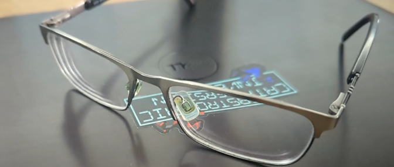
If you wear glasses for distance, you should still wear them in the headset.If you wear glasses for reading, you won't need them. Pull back on the headset's strap and push the headset straight onto your face.
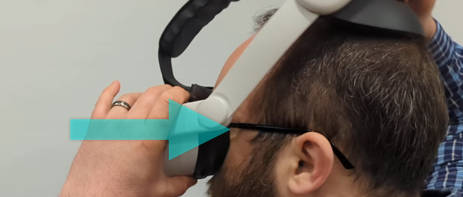
Pull the strap down over your head and make sure it is secured around the curve of your head. If your headset has a hard strap, tighten it via a twist knob in the back.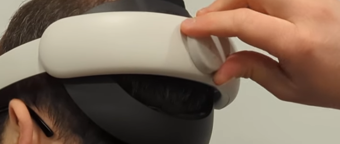
If your headset has a fabric strap, pull apart the plastic tabs to tighten it, or push them together to loosen it.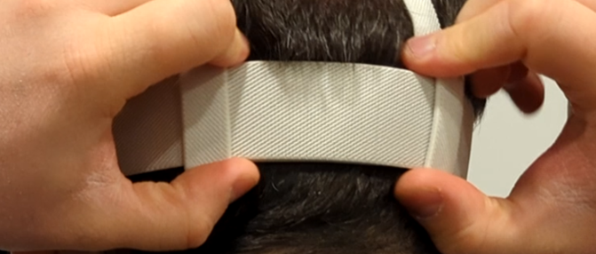
If you need to adjust the top strap, you can pull up on the Velcro, slide it to the right length, and secure the Velcro again.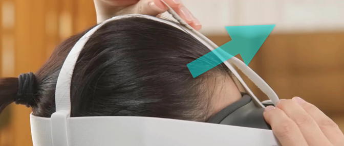
The Quest 2 has a power button on the right side of the headset.Quest 3 variants' power button is on the left.
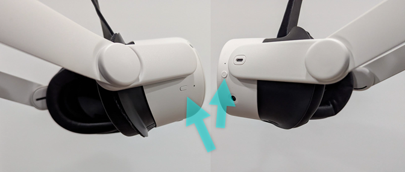
If the screen isn't already on, press the power button to turn it on. If the view feels out of focus, you may need to adjust the lens spacing: The Quest 3 has a wheel on the bottom that gradually adjusts the spacing.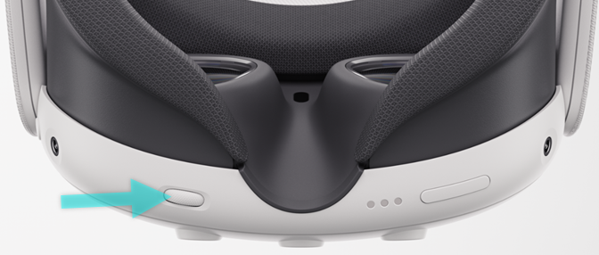
The Quest 2 and 3S have only 3 lens spacing settings. You'll instead grab one of the lenses to slide them into position.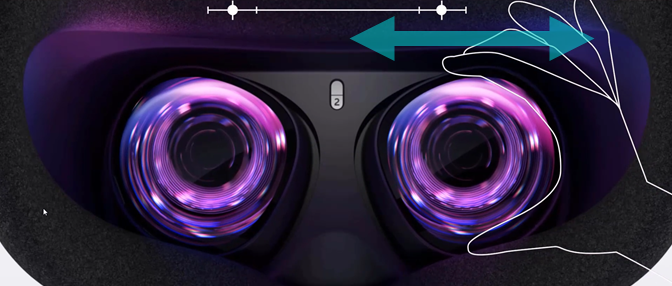
The controllers are custom-built for left or right hands such that the middle finger can comfortably press the grip button and the pointer finger can comfortably pull the trigger.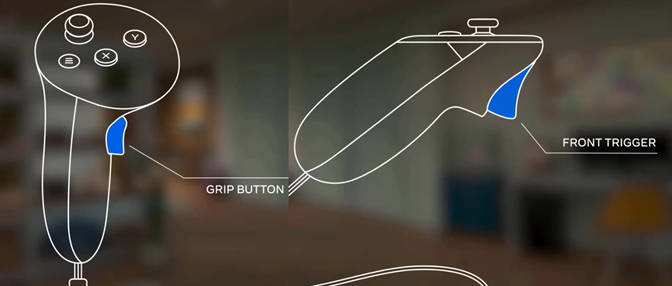
This game does not require both hands. If you are unable to use one of the controllers, you can leave it behind. Remember to use the straps to keep the controllers from flying out of your hands: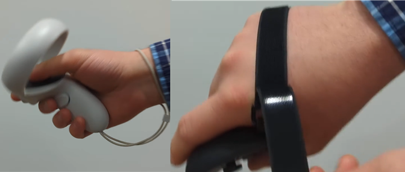
Wrist straps with a little slider are the default, but some grips may have knuckle straps that adjust with Velcro or bungees.
Joining & Setup
From the main menu, select Join a Game.
They will be numbered 1 and 2.
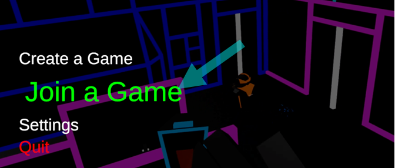
You will be auto-connected to the game. Your host will have placed at least one pair of calibration points in the space (though they can add several).They will be numbered 1 and 2.
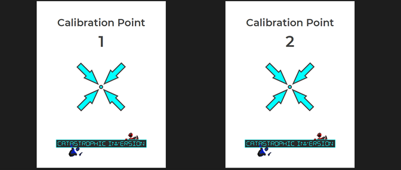
While touching the first calibration point of any pair with either controller, press A, B, X, or Y on that controller.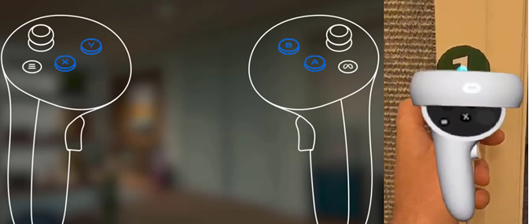
Then proceed to the second calibration point and do the same. If you are adjusting your headset later and accidentally put it to sleep by bumping the power button, it may lose track of its place in the room.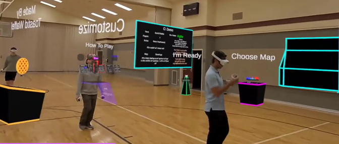
If at any point you notice the game is misaligned, you can hit the left menu button , select Recalibrate, and tap any pair of calibration points again to get back to the game.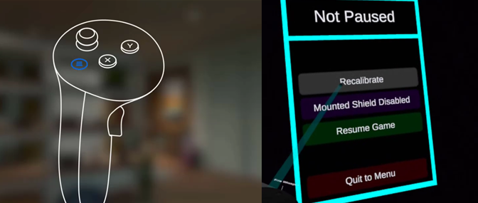
Once you're calibrated, you should be able to see the virtual lobby environment as well as the other players, clad in virtual armor.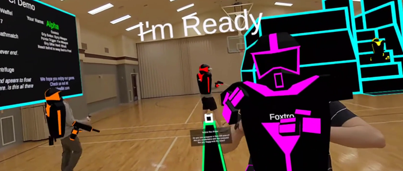
As a group in the lobby, you can select from the maps and game modes your host has made available via the settings table.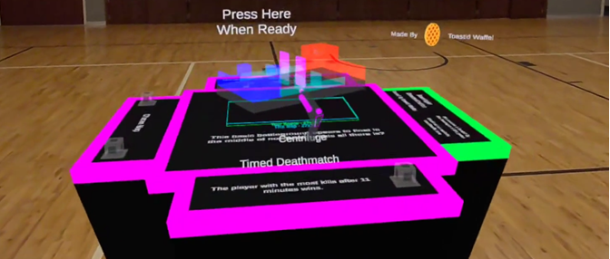
If you would like to update your display name or your glow color, you can do so from the customization stations.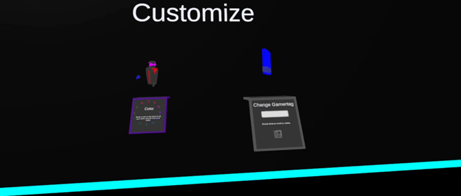
Once everyone has joined and the settings have been selected, hit Ready to start the game.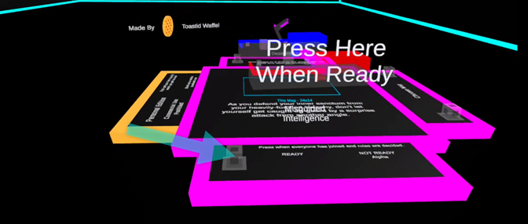
Once the game has started, you cannot join or rejoin the game until the other players have returned to the lobby. If it's a team game, team buttons will appear. Hit the button corresponding to the team you want to join.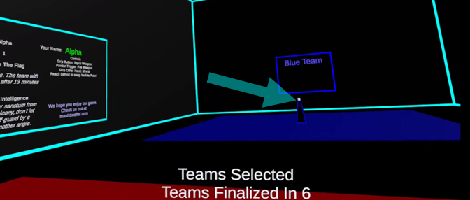
When the last player joins a team, you will have 10 seconds before the teams are finalized. After that point, you cannot switch teams . When the spawn points appear, step into a point to join the game.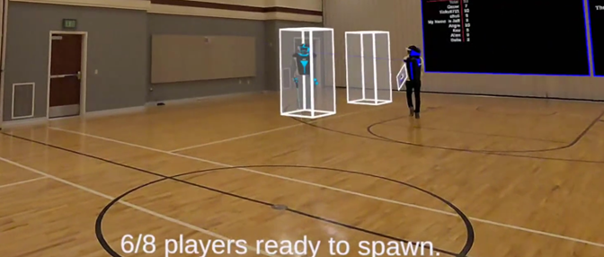
More than one person can be in a spawn point at a time.
Rules & Gamemodes
Your objective varies by game mode:
In Deathmatch, you get a point each time you kill another player.
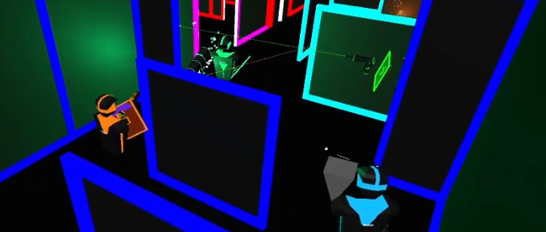
In Capture the Flag, you get a point each time you bring the other team's flag (which looks like a floppy disk) from their base back over to your base.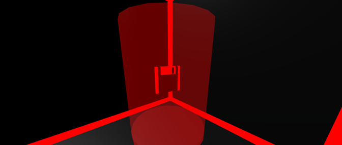
Adventure Mode has all players working together as a team exploring a bigger map and completing objectives.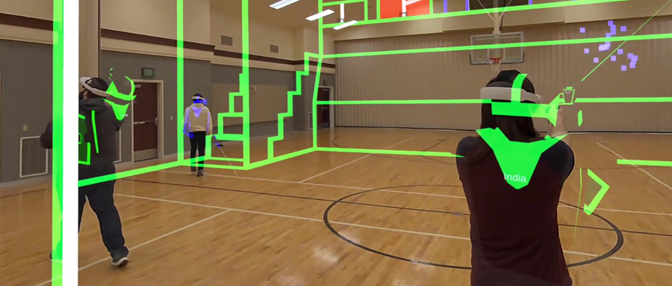
There are quite a few details that can be customized within each game mode. Check the Rules Panel to see detailed instructions for the current settings.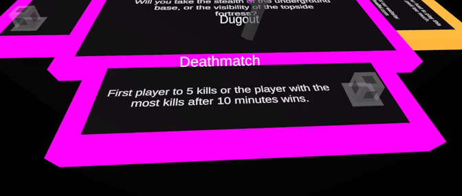
Controls & Health
Press and hold the
middle finger grip button
on either hand to equip your gun.
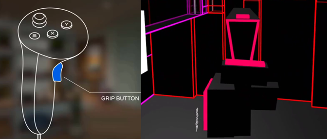
Pull the trigger with your pointer finger to fire the gun.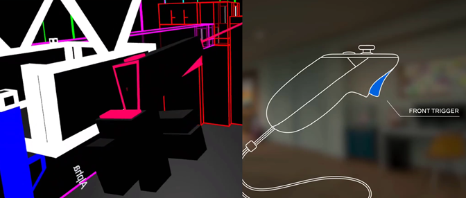
If you see a weapon drop floating in the game, you can grip to pick it up and use a different weapon.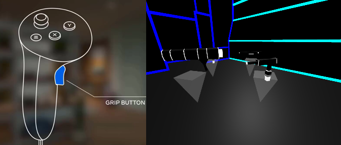
To switch back to your basic pistol, reach your hand behind your head and grip.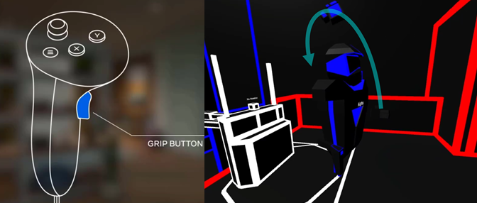
You can do this again to switch back to your upgraded weapon. While your gun is in one hand, grip the other hand to equip your shield.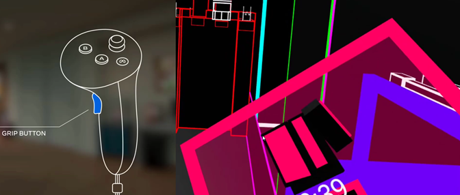
There is also an option from the in-game menu to enable a mounted shield.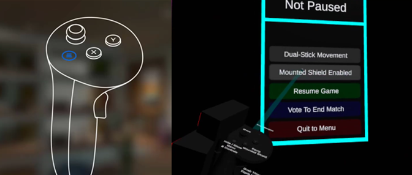
The mounted shield will hold itself wherever you drag it and it can be toggled with the A or X button.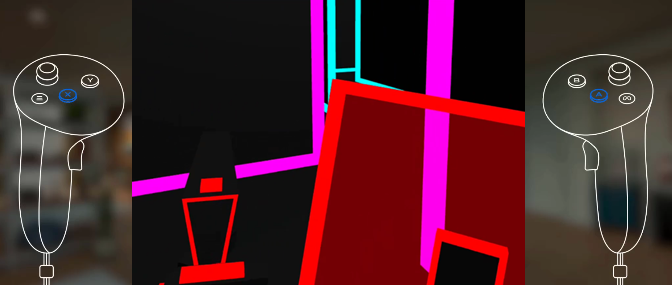
As you take on damage, your armor glow will start to fade until finally, you die.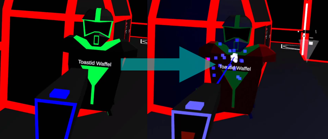
When you die in the game, you will be sent to the spawn world.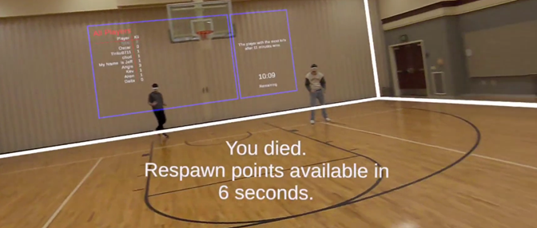
You will be invisible to other players during this time but will show up as a blinking bumper if they get too close.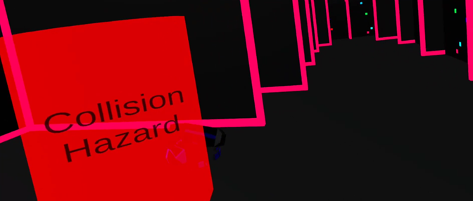
Don't walk into the blinking bumpers. The spawn world is transparent so you have some extra help to avoid collisions while you're invisible. Spawn points will appear after a brief cooldown period.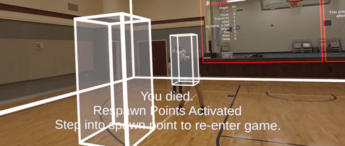
Step into any point to return to the game.
Environment
If you come across a turret, you can grip one or both handles to activate it.
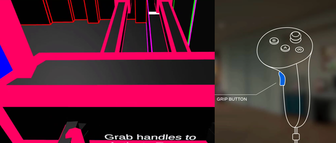
Pull the handles in the opposite direction you want to aim (like it's connected by a pivot in the middle).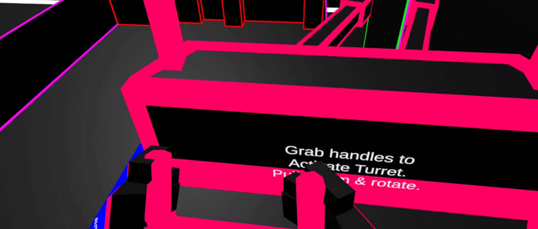
Pull and hold the trigger on either gripped hand to fire the turret.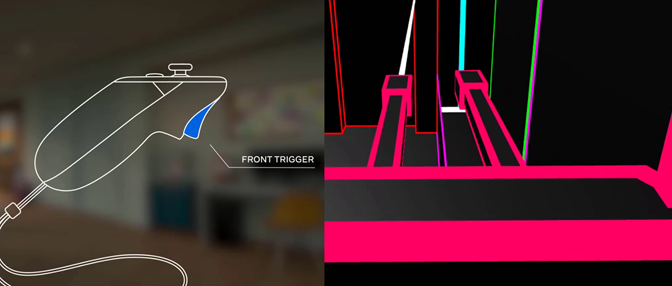
The turret has powered rotation. If you pull far enough right or left, it will rotate to keep aiming.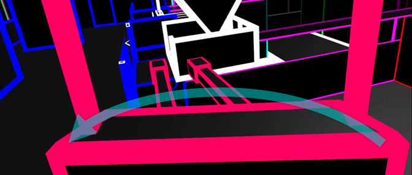
If you get motion sick easily, you might want to turn that off with the button on top before you board.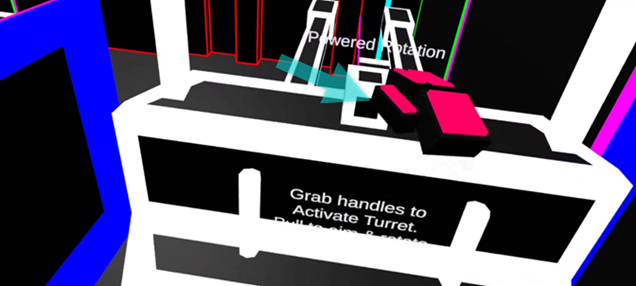
There are also gondolas and elevators in some of the levels that will carry you between floors or over gaps. These are activated by a button push.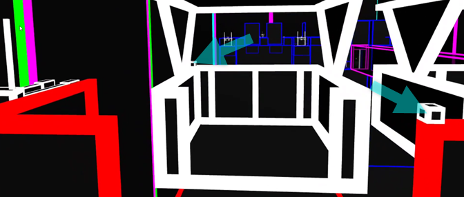
A few of the maps have stairs. When you step onto stairs in the game, the stairs above and below you lower and rise to match the stair you're standing on. Simply walk along the stairs as if you're on flat ground.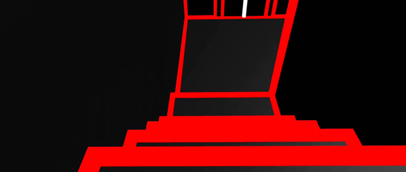
This will be unnerving at first... It helps to look at your feet. After the game you can review the score, start a rematch, or return to the lobby.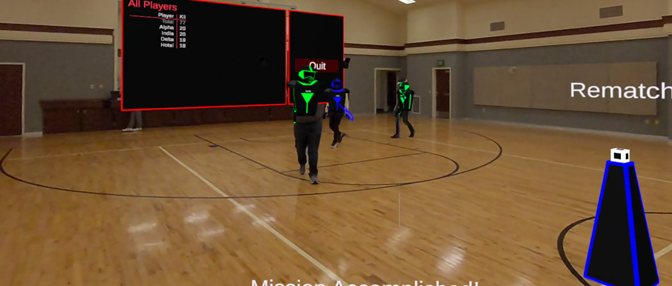

 We also have maps that are half-court (10 x 10 meters / 33 x 33 feet) but we can't fit as much fun stuff into those, so it's a huge improvement if you can find a full court to play on.
We also have maps that are half-court (10 x 10 meters / 33 x 33 feet) but we can't fit as much fun stuff into those, so it's a huge improvement if you can find a full court to play on.
 If you don't have any such space available, you can play in standing/roomscale mode at home.
If you don't have any such space available, you can play in standing/roomscale mode at home.